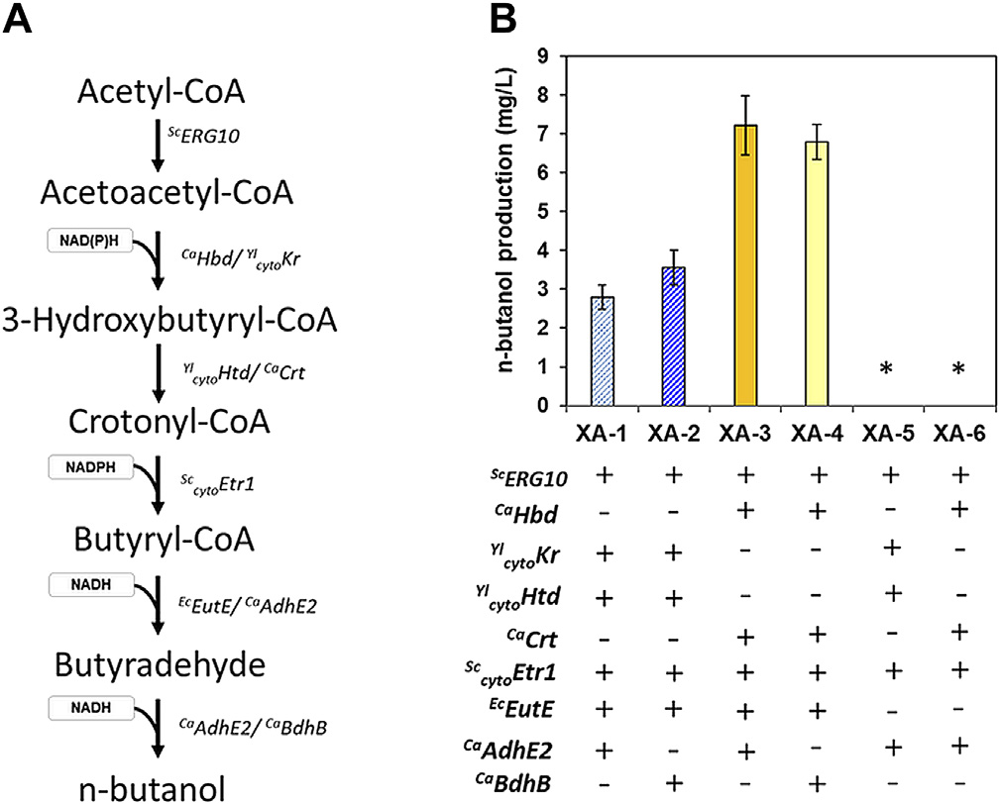
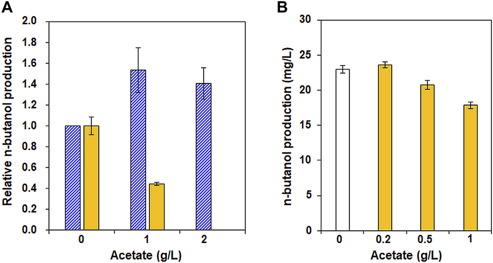

工程酵母共发酵
五碳糖利用的关键挑战
木质纤维素水解液中含有约 60-70% 葡萄糖（六碳糖）和 30-40% 木糖（五碳糖）。传统酿酒酵母（Saccharomyces cerevisiae） 只能高效发酵葡萄糖，对木糖的利用能力极差。如果丢弃木糖部分， 意味着原料中有近三分之一的碳源被浪费——这在经济上是完全不可接受的。
因此，构建能够同步高效利用葡萄糖和木糖的工程菌株， 是纤维素乙醇发酵环节的核心挑战。


木糖代谢的两条工程路线
2022年的研究（L12）在代谢工程方面取得了重要进展，通过多基因编辑手段优化了木糖代谢途径， 在实验室摇瓶条件下实现了接近理论值的乙醇产率。然而——
工业条件下性能显著下降
实验室条件下的共发酵性能在工业环境中面临严峻挑战： 高底物浓度带来的渗透压、预处理产生的抑制物（糠醛、HMF、酚类化合物）、 非无菌操作条件下的杂菌污染风险、以及长时间连续发酵中菌株遗传稳定性等问题， 都会导致实际发酵效率比实验室低30-50%。 这也是从实验室到工厂"最后一公里"的典型困境。